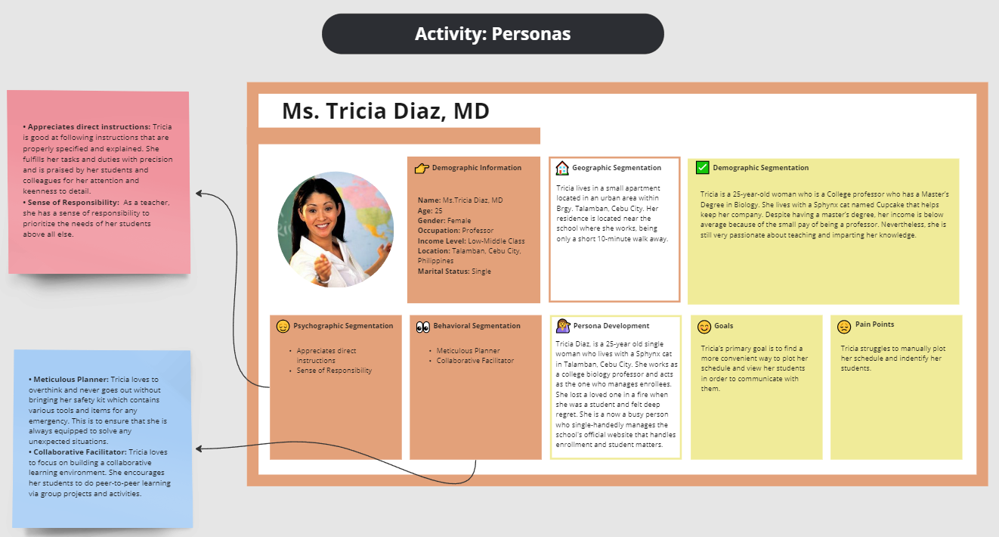
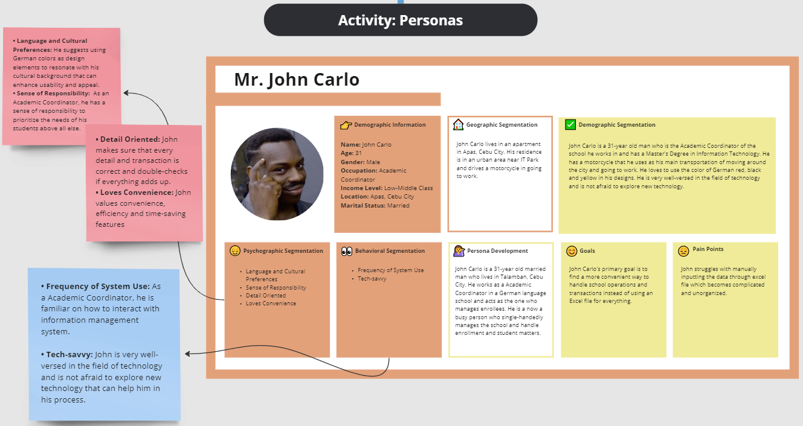
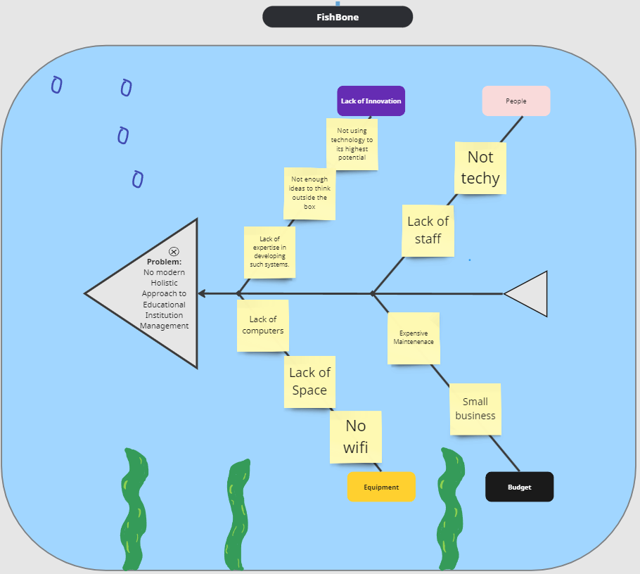
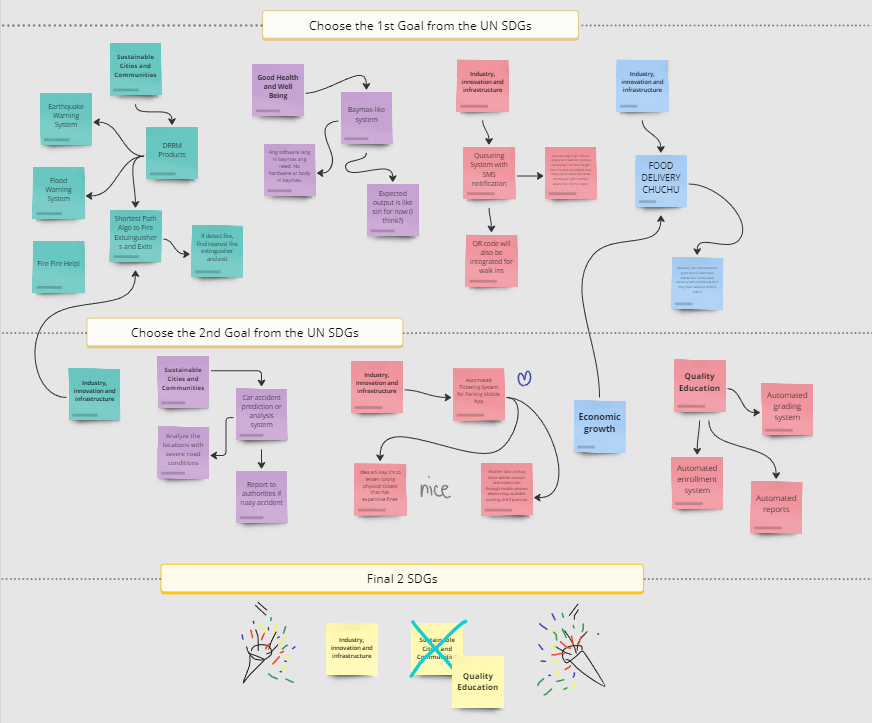

1. Introduction:
It is important to provide quality education to students and make it an inclusive and equitable educational environment. Schools need to implement a proper working system that is understandable to all to ensure a hassle-free experience for students and staff.
As we progress through the digital age, digital solutions have started to be incorporated into educational systems to facilitate effective learning, teaching, enrolling, and student monitoring. However, there are still some schools relying on traditional systems such as using pen and paper and a spreadsheet to manage student data. Although this approach still technically works, it is still time-consuming and flawed and will also be frustrating to the staff handling it.
Eduops aims to solve the issue of schools struggling to operate due to outdated systems. This would allow the administrators and teachers of this school to manage their students’ data in a much more efficient and user-friendly manner. Not only that, the life quality of students would significantly improve with a more easier way to manage their payments, schedules, and tracking of their classes.
This case study will tackle how Sprach Institut can upgrade its business model and school system by creating an information management system to blend technology with quality education. This would significantly improve the quality of the staff and administrators of the institute in managing their systems as well as creating a better educational environment for the students and future enrollees.
2. Project Background:
The purpose of this case study is to develop and implement an information management system called Eduops designed to streamline operations and improve the system at Sprach Institut.
Sprach Institut was facing challenges with their current system such as manual data management, enrollment processes, payments and class schedule which can be time-consuming and prone to errors. With the help of Eduops, Sprach Institut will be able to automate task and streamline data management, freeing up staff time for other initiatives. It’s a user-friendly platform that will improve communication and increase the satisfaction for staff and students.
3. Problem Statement:
Outdated or traditional educational system is a common problem that can negatively affect the efficiency and overall quality of education. This study aims to solve the following problems of an outdated system which include:- Traditional or manual data entry - manually recording data is time consuming which decreases efficiency and productivity
- Prone to human error - manually recording data is prone to errors which can impact the accuracy of the data being recorded
- Poor User Experience - inefficient steps for the staffs and students lead to frustration
- Limited Accessibility - outdated systems lack features that could cater to the needs of the organization and students which can improve efficiency
4. User Research:
Research Method
Research Questionnaire - conducted one-on-one interviews to gather information about the users.
- What are your challenges with the outdated educational management system?
- How does the current educational management system work?
- What features do you think that could help improve the system and user experience?
User Persona
After interviewing the user, we were able to gather various information about the users. We were able to know their background, goals, pain points, etc. With this information we created user personas on MIRO board.
- Ms. Tricia Diaz, MD 
- Mr. John Carlo 
Insights
After conducting the interview we have gathered the following insights:
- The common challenge that users face with the outdated system is that they have to manually enter data which is prone to errors and affects the accuracy of the data.
- The current management system works by utilizing excel and pen and paper.
- The features that would help improve the system is an automated data management system where they wouldn't need to manually keep track of the records.
5. Ideation and Brainstorming
- Brainstorming Map In order to decide on which SDGs we would work on, we used a brainstorming map. With brainstorming we were able to share our different ideas that would help solve specific problems. After placing our ideas, we then voted on which SDG to focus on which is Quality Education. This map helped us organize our ideas and make it one.
- Fishbone Diagram Our group decided to use a fishbone diagram to identify the problem and its causes of the outdated educational management system. With this diagram we were able to see the relationship between the problem and its causes. 
- SCAMPER Our group decided to use a scamper map to organize our ideas for the possible features that would be able to meet the users’ needs. As a group, we were able to collaborate and decide on which features to add or not. Overall, with SCAMPER we were able to visualize the possible features of the system. 

6. Prototyping:
- Explain how design concepts were translated into tangible prototypes.
- Showcase different iterations of prototypes, from low-fidelity to high-fidelity versions. Discuss the feedback received during prototyping and how it influenced subsequent iterations.
Wireframe Output
1. Login Screen
- User Landing Page
- Logo and client name on top of the form
- Form (Fields neede are Email and Password)
- Forgot password button to open the Forgot password modal
- Login button - redirects to Home Page screen
- Link to Register button screen
-
Forgot Password Modal
- Asks for user's email used to sign up the account
- Field for the email address
- Reset Password button
2. Register Screen
-
Form
- Fields needed are First name, Middle Name, Last Name, Birthdate (month, day, & year), Email, Contact Number, Password, and Confirm Password
- Link to Login screen
- Submit to button to open the OTP modal
-
OTP Modal
- Shows a verification message
- Asks for a 6-digit code that was sent to the user’s email for verification
- Field for the authentication code
- Confirm button - redirects to Home Page screen
- Button to resend code if the user hasn’t received the code
3. Home Page Screen (Student)
-
Navigation bar (navbar) at the top
- Contents of the navbar are the client logo at the far left, navigation links (“Home”, “Enrollment”, “Grades”, “Payment”, “Documents”) at the center, and notification button and user account drop down at the far right. User account dropdown contains the options “View Profile” and “Logout”
- Display all posted announcements and ordered by the most recent time and date
-
A post has the following details:
- Details of the user who posted the announcement such as their user photo, name, and the department office they belong
- Post title - this text will be enlarged
- Body or the content of the post
- Tag indication whether it is a Global or Broadcast announcement
- Date and Time announced
4. Home Page Screen (Teacher)
-
Navigation bar (navbar) at the top
- Contents of the navbar are the client logo at the far left, navigation links (“Home”, “Enrollment”, “Grades”, “Payment”, “Documents”) at the center, and notification button and user account drop down at the far right. User account dropdown contains the options “View Profile” and “Logout”
- Create an announcement button to open the Create Post modal
- Display all posted announcements and ordered by the most recent time and date
-
A post has the following details:
- Details of the user who posted the announcement such as their user photo, name, and the department office they belong
- Post title - this text will be enlarged
- Body or the content of the post
- Tag indication whether it is a Global or Broadcast announcement
- Date and Time announced
- If the post is created by the user, a three-dotted vertical menu will appear with the options “Edit post” and “Remove Post”. Clicking the Edit post button will open the Edit Post modal
-
Create & Edit post modal:
- Back button
- Form
- Fields needed are Post Title and Content
- Broadcast announcement tag
- Icon buttons to add image, attach files, and insert emoticons in the content.
- Send a copy dropdown with options “Email Recipients”, “Push Notification”, and “Both”
- Cancel and Create button
- If the fields of the form contain values and the user attempts to exit the modal, the discard changes confirmation message will pop up.
- Create Post modal can be closed when clicking outside while Edit Post modal cannot and stays on the user’s screen. The only way to close the Edit Post modal is through the Back, Cancel, and Confirm button.
5. Home Page (Admin)
-
Navigation bar (navbar) at the top
- Contents of the navbar are the client logo at the far left, navigation links (“Home”, “Enrollment”, “Grades”, “Payment”, “Documents”,”Accounts”) at the center, and notification button and user account drop down at the far right. User account dropdown contains the options “View Profile” and “Logout”
- Create an announcement button to open the Create Post modal
- Display all posted announcements and ordered by the most recent time and date
-
A post has the following details:
- Details of the user who posted the announcement such as their user photo, name, and the department office they belong
- Post title - this text will be enlarged
- Body or the content of the post
- Tag indication whether it is a Global or Broadcast announcement
- Date and Time announced
- A three-dotted vertical menu with the options “Delete post” and “Hide Post”. If the post is created by the user, another option called “Edit post” will appear. Clicking the Edit post button will open the Edit Post modal
-
Create & Edit Post modal:
- Back button
-
Form
- Fields needed are Post Title and Content
- Global announcement tag but can be clickable to change its value to Broadcast announcement
- Icon buttons to add image, attach files, and insert emoticons in the content.
- Send a copy dropdown with options “Email Recipients”, “Push Notification”, and “Both”
- Cancel and Create button
- If the fields of the form contain values and the user attempts to exit the modal, the discard changes confirmation message will pop up.
- Create Post modal can be closed when clicking outside while Edit Post modal cannot and stays on the user’s screen. The only way to close the Edit Post modal is through the Back, Cancel, and Confirm button
6. Enrollment Form Screen
- Only accessible by students through the navigation bar “Enrollment” > “Student Admission”
- Will only display if ever the user has not yet filled out the Enrollment Form. This is to ensure that users cannot fill out the form multiple times and avoid duplicated information in the system
- Navigation bar for students at the top
-
Form
- Fields needed are Age, Civil Status, and Address
- Preferred course dropdown
- Next button - redirects to Maya Payment Form screen
7. Enrollment Status Screen
- Only accessible by students through the navigation bar “Enrollment” > “Student Admission”
- Will only display if the user has submitted the Enrollment Form
- Navigation bar for students at the top
- Displays the enrollment status whether Pending or Completed
-
Displays the user’s current step in their enrollment
- Enrollment Form
- Payment Form
- Verification
- Revision
- Completed
- If the user is in the Payment Form step, “Click here to proceed to payment.” message displays below to redirect user to the Maya Payment Form screen
- Displays the administrator contact informations like contact number and email address
8. Enrollment: View Schedule Screen
9. Enrollment Status Screen
10. Enrollment Status Screen
11. Enrollment Status Screen
12. Enrollment Status Screen
13. Enrollment Status Screen
14. Enrollment Status Screen
15. Enrollment Status Screen
16. Enrollment Status Screen
Storyboard Narrative
Storyboard: Polano Dolor
1. Login Page Screen
2. Student’s Register Screen
3. Landing Page Screen
4. Enrollment Form Screen
5. Payment Screen
6. Payment Redirect Screen
7. Enrollment Status Screen
8. View Schedule Screen
9. Student Load Screen
10. Assessment Screen
11. Ledger Screen
12. User Profile Screen (Admin)
Storyboard: Ms. Tricia Diaz, MD
1. Login Page Screen
2. Home Page Screen
3. View Schedule Screen
4. Teaching Load Screen
5. User Profile Screen
Storyboard: Administrator
1. Login Page Screen
2. Landing Page Screen
3. Staff Register Screen
4. View Schedule Screen
5. Course Assessment Screen
5. Enrollment Request Screen
5. View Accounts Screen
5. Manage Account Screen
5. User Profile Screen
Lo-fi Prototype
Our team used Figma in the creation of our prototypes as our UI design tool. This would allow us to have real-time collaboration on our project as well as rapidly see outputs and make fixes and changes as our system is slowly being built upon..
Below is the lo-fi prototype of Eduops which composes of sketches ang placeholders of images and descriptions which serves as the draft blueprint of our system for the system vision our company had in mind for our system together with the arrows which would serve as the guides regarding the navigation flow for all the different types of users.
Hi-fi Prototype
After creating the lo-fi prototype, our team proceeded in designing the hi-fi version of it. Here, colors, pictures, a working navigation for all the users, and a most accurate final design in terms of details and functionality. This would serve as the actual blueprint for the system and what it would feel like when it would be used by the users.
Below is the hifi-prototype of Eduops. You may interact with the buttons and switch flows between the different users.
7. Lessons Learned:
- Cuyos
- With the help of my groupmates, I was able to learn the importance of the needs of our client and how to work on them. Designing the system for the client’s needs made me realize that the German red is so bright and is not pleasant for the eyes but we still have to go for what the client wants.
- Calzada
- Designing this project has been really enjoyable and insightful. I was able to gain more experience in handling the needs and requirements of the clients and working hand-in-hand with them. The design process of the project allowed us to focus more on being user-centric and think of the possible designs that would benefit them the most. Anytime a problem would pop up, we as a team would resolve it together and ensure that everyone was on the same page. As we traversed through the entire design process, we would make sure that there would be no loose ends in our design and I am confident that our design thinking have significantly improved throughout the course of this project.
- Masayon
- It was a challenge for me to design our system for this SDG because this is where I truly learned the meaning and importance of the words "Design your system according to your user's wants and needs." Usually, the systems I designed and developed align with the user's preferences. Hence, it is a new experience for me wherein the user has different wants and needs, and what I want to design differs from theirs. So, in the end, it just boils down to the thought that I am only the developer. I have to comply with their requirements because they are the client, and they are the ones who will ultimately use the system.
- Saraosos
- For this activity, I have learnt how important it is to consider the wants of the client despite not really agreeing with it, especially with the design and the colors. As a team, we were able to discuss ways on how we could combine their ideas with ours. Overall, it was a very insightful activity.
8. Conclusion:
In conclusion, the case study allowed the team to explore the design process and properly design the system to achieve its primary goal of improving and giving quality education to the beneficiaries. Through multiple design thinking principles, the team was able to uncover new ideas and solve problems that would arise throughout the various stages of designing the system. Hence, it is always important to be flexible and open-minded so that everyone can consider each other's ideas. After designing Eduops, the team is hopeful that it would successfully improve the client's processes of their institution by providing them convenient access to information and efficient support in teaching and learning practices through the designed system.